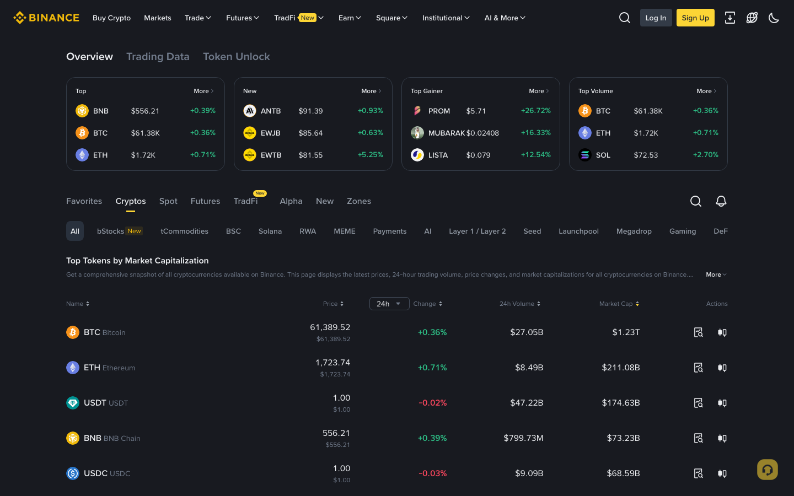

Colour — live swatches
Click any swatch to copy its value; roles are listed before raw primitives.
Semantic roles
Primitives
Typography — real sizes and weights
| Token | Value | Specimen | Status |
|---|---|---|---|
| type/figure | 72px | Aa 0123456789 The quick brown fox | observed |
| type/headline | 40px | Aa 0123456789 The quick brown fox | observed |
| type/title | 18px | Aa 0123456789 The quick brown fox | observed |
| type/ui | 14px | Aa 0123456789 The quick brown fox | observed |
| type/body | 12px | Aa 0123456789 The quick brown fox | observed |
| type/legal | 8px | Aa 0123456789 The quick brown fox | observed |
Weights
| Token | Value | Specimen |
|---|---|---|
| weight/regular | 400 | Hierarchy weight |
| weight/medium | 500 | Hierarchy weight |
| weight/semibold | 600 | Hierarchy weight |
| weight/bold | 700 | Hierarchy weight |
Radius & depth
Shadows
Motion replay
Each row replays the actual duration token with the system's easing. Reduced motion is respected.
| Duration | Value | Specimen | |
|---|---|---|---|
| motion/micro | 150ms | ||
| motion/hover | 200ms | ||
| motion/panel | 700ms |
Easings observed
- motion/easing-standard · cubic-bezier(0.4, 0, 0.2, 1)
- motion/easing-panel · cubic-bezier(0, 0, 0.2, 1)
Taste DNA
Colour is assigned by role, not by hierarchy
a three-role colour system (brand, direction, neutral)
a hue per category (per-coin colours, per-section accents, coloured badges)
Why In a list of fifty numbers, a colour that could mean anything stops carrying meaning; three roles keep a glance reliable.
Depth is a hairline, not a shadow
1px hairlines plus a lifted fill
a drop shadow on every card and panel
Why On a dark canvas a shadow is invisible until it is strong enough to smear the 12px digits sitting on it.
Data outranks copy
a 72/40/12 scale biased toward numbers
a balanced 48/28/16 marketing scale where copy and data compete
Why The promise of an exchange is a number; making it the largest object lets a screenshot-free page still read as a product.
The display face is earned, not standard
a single UI family with a sparing display face
a display/body pairing applied site-wide
Why A second family used everywhere splits product identity from marketing; used sparingly it signals that this surface is different.
Source record
Screenshots below are the captured source pages, shown for comparison — they are not rebuilt by lewitt.



Pages inspected
- https://www.binance.com/en
- https://www.binance.com/en/crypto/convert
- https://www.binance.com/en/markets/overview
- https://www.binance.com/en/futures/home
Limitations
- binance.com redirects to www.binance.com/en; output folder keeps the requested binance.com name.
- Menu dropdowns and modals were not opened (reversible-state risk); their states are unknown.
- The homepage h1 is a 16px utility node, so display sizes were read from the hero figure and h2, not semantic tags.
- prefers-reduced-motion was found on 2 of 4 pages; the CSSOM scan disagrees page to page.
- BinancePlex appears on only 2 of 4 pages, so its role is inferred.
Every token
| CSS var | Token | Layer | Type | Value |
|---|---|---|---|---|
| --lw-dark-900 | color/dark/900 | primitive | color | #181A20 |
| --lw-dark-1000 | color/dark/1000 | primitive | color | #0B0E11 |
| --lw-slate-700 | color/slate/700 | primitive | color | #29313D |
| --lw-slate-800 | color/slate/800 | primitive | color | #1E2329 |
| --lw-slate-600 | color/slate/600 | primitive | color | #333B47 |
| --lw-slate-500 | color/slate/500 | primitive | color | #3D4452 |
| --lw-grey-100 | color/grey/100 | primitive | color | #EAECEF |
| --lw-grey-400 | color/grey/400 | primitive | color | #929AA5 |
| --lw-grey-500 | color/grey/500 | primitive | color | #707A8A |
| --lw-gold-400 | color/gold/400 | primitive | color | #F0B90B |
| --lw-gold-300 | color/gold/300 | primitive | color | #FCD535 |
| --lw-on-gold | color/on-gold | primitive | color | #202630 |
| --lw-up | color/up | primitive | color | #2EBD85 |
| --lw-down | color/down | primitive | color | #F6465D |
| --lw-canvas | color/canvas | semantic | color | #181A20 |
| --lw-surface | color/surface | semantic | color | #29313D |
| --lw-well | color/well | semantic | color | #1E2329 |
| --lw-border | color/border | semantic | color | #333B47 |
| --lw-border-strong | color/border-strong | semantic | color | #3D4452 |
| --lw-text-primary | color/text/primary | semantic | color | #EAECEF |
| --lw-text-secondary | color/text/secondary | semantic | color | #929AA5 |
| --lw-text-tertiary | color/text/tertiary | semantic | color | #707A8A |
| --lw-brand | color/brand | semantic | color | #F0B90B |
| --lw-action-bg | color/action/bg | semantic | color | #FCD535 |
| --lw-action-fg | color/action/fg | semantic | color | #202630 |
| --lw-trend-up | color/trend/up | semantic | color | #2EBD85 |
| --lw-trend-down | color/trend/down | semantic | color | #F6465D |
| --lw-font-ui | font/ui | primitive | fontFamily | 'BinanceNova', -apple-system, 'Helvetica Neue', Arial, sans-serif |
| --lw-font-display | font/display | primitive | fontFamily | 'BinancePlex', 'BinanceNova', -apple-system, sans-serif |
| --lw-font-body | font/body | semantic | fontFamily | 'BinanceNova', -apple-system, 'Helvetica Neue', Arial, sans-serif |
| --lw-font-campaign | font/campaign | semantic | fontFamily | 'BinancePlex', 'BinanceNova', -apple-system, sans-serif |
| --lw-type-figure | type/figure | component | dimension | 72px |
| --lw-type-headline | type/headline | component | dimension | 40px |
| --lw-type-title | type/title | component | dimension | 18px |
| --lw-type-ui | type/ui | component | dimension | 14px |
| --lw-type-body | type/body | component | dimension | 12px |
| --lw-type-legal | type/legal | component | dimension | 8px |
| --lw-leading-body | leading/body | component | number | 1.33 |
| --lw-weight-regular | weight/regular | primitive | fontWeight | 400 |
| --lw-weight-medium | weight/medium | primitive | fontWeight | 500 |
| --lw-weight-semibold | weight/semibold | primitive | fontWeight | 600 |
| --lw-weight-bold | weight/bold | primitive | fontWeight | 700 |
| --lw-radius-button | radius/button | semantic | dimension | 10px |
| --lw-radius-card | radius/card | semantic | dimension | 8px |
| --lw-radius-option | radius/option | semantic | dimension | 16px |
| --lw-radius-chip | radius/chip | semantic | dimension | 4px |
| --lw-radius-pill | radius/pill | primitive | dimension | 9999px |
| --lw-depth-overlay | depth/overlay | component | shadow | -2px 0 14px rgba(0, 0, 0, 0.4), 0 0 6px rgba(0, 0, 0, 0.2) |
| --lw-motion-micro | motion/micro | primitive | duration | 150ms |
| --lw-motion-hover | motion/hover | primitive | duration | 200ms |
| --lw-motion-panel | motion/panel | primitive | duration | 700ms |
| --lw-easing-standard | motion/easing-standard | primitive | easing | cubic-bezier(0.4, 0, 0.2, 1) |
| --lw-easing-panel | motion/easing-panel | primitive | easing | cubic-bezier(0, 0, 0.2, 1) |
| --lw-space-unit | space/unit | primitive | dimension | 8px |
| --lw-space-block | space/block | component | dimension | 64px |
| --lw-layout-container | layout/container | component | dimension | 1440px |
| --lw-layout-pad | layout/container-pad | component | dimension | 24px |